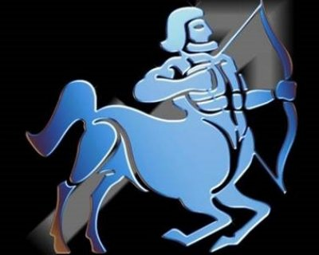

(22 Kasım - 21 Aralık)
Yay burcu, kırmızı etten sakınmalıdır. Barsak sistemlerini dengede tutmak için lifli beslenme şekillerini tercih etmeliler. Süt, peynir ve beyaz et organizmalarını yeniler. Buharda pişmiş yemekleri tercih etmelidirler. Şekerli ve unlu besinlerden uzak kalmalıdırlar. 3 Günde 2 kilo vermek için, uygulayacağınız diyeti spor aktivitesi ile destekleyin. 3 Günde 2 kilo vermek için, uygulayacağınız diyeti spor aktivitesi ile destekleyin.
1.ÖĞÜN:Aç karnına 2 bardak ılık limonlu su, yağsız tavada tek yumurta ile yapılan omlet. Yanında bir tatlı kaşığı bal ve iki dilim kepek ekmek. İstediğiniz kadar şekersiz çay ve kahve. Arada bir tane havuç.
2.ÖĞÜN:Izgara et, bir porsiyon sebze yemeği ve arada iki galeta, bir kibrit kutusu büyüklüğünde yağsız peynir
3.ÖĞÜN:Haşlanmış tavuk, mısırlı yeşil salata. Arada bir porsiyon meyve
1.ÖĞÜN:Aç karnına 2 bardak limonlu su, bir kibrit kutusu yağsız beyaz peynir, bir domates, bir salatalık, şekersiz çay veya kahve.
2.ÖĞÜN:Tek haşlanmış yumurta ile yapılmış omlet, domates salatası. Öğün arası 1 elma.
3.ÖĞÜN:Fırında yağsız pişmiş 1 patates, haşlanmış kabak, 1 tane armut.
1.ÖĞÜN:Aç karnına 2 bardak limonlu ılık su. Kepek ekmekle yapılmış bir diyet peynirli, sandviç, 1 salatalık 1 domates.şekersiz çay ve kahve.
2.ÖĞÜN:1 Kase sebze çorbası,ızgara balık, bol yeşil salata. Öğün arasında 2 diyet bisküvi
3.ÖĞÜN:Izgara tavuk, haşlanmış sebze,1 tane havuç.10 tane kiraz.gece yatarken, bir fincan yeşil çay.